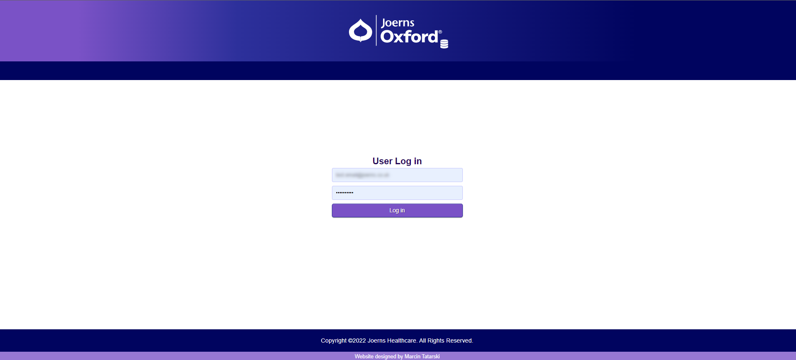
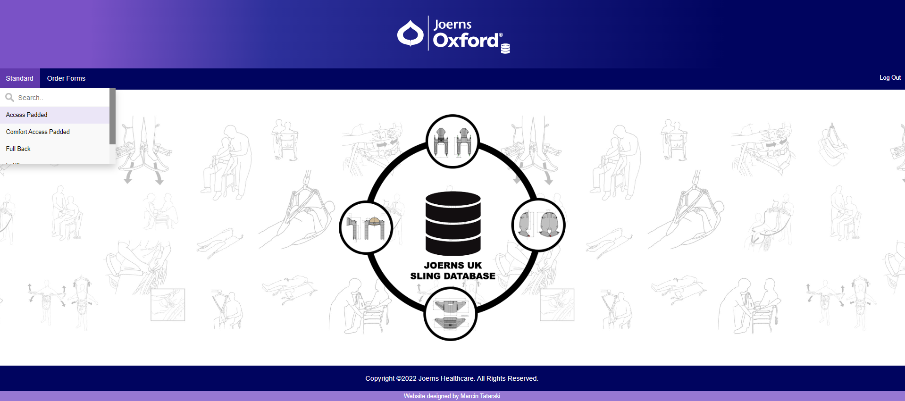
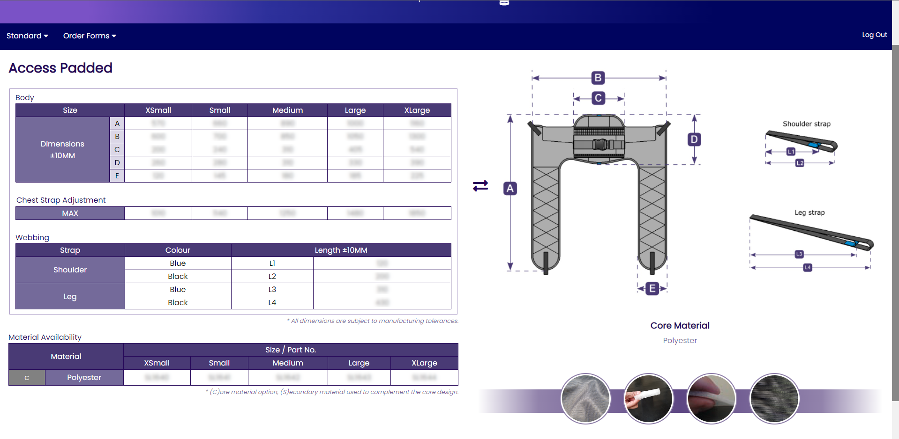
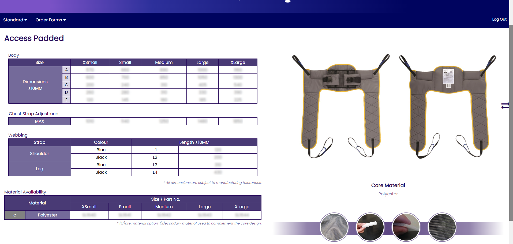
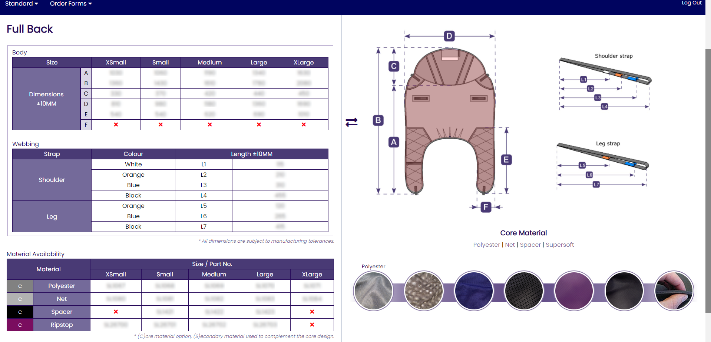
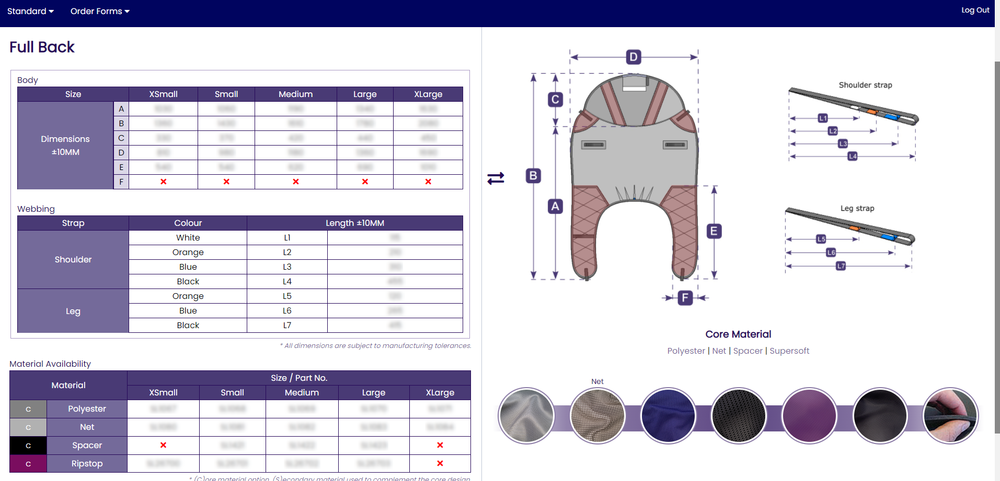

The Design
The idea was to create a web app for lifting slings for patients, and used by our sales representatives. It was required to be easy to navigate and accessible 24/7. The app includes the following features:
- detailed technical drawings
- sling specifications
- material availability for each sling
Python was the main programming language used, with the additional support of Flask, SQLAlchemy, and a bit of Vanilla Javascript.
All UI elements; logo, splash screen, sling swatches, etc. were designed from scratch in Inkscape. For the slings' 3D models, I used Solidworks, and for the slings' pictures were provided by our marketing team.
The Login Screen and The Main Page
The app is only accessible to sales representatives, so it has to be password protected.
All logins and passwords are stored in a database, hashed with pbkdf2, and also salted.
The main page has a drop-down menu of all slings sold by Joerns, with an additional menu for custom (editable) order forms for clients who prefer custom slings.
Technical Information
Technical information is stored in the SQL database. The information in the tables changes, depending on whichever sling is edited. Each sling has a 3D model representation and additionally there is a 'real-life' view too. Most of the slings have multiple core materials to choose from. When clicking on any of these, all the other materials used for this specific sling are displayed as samples.
By default, the 3D model of the sling is displayed. If a customer wants to see a more authentic view of the sling, then it's just a matter of clicking the arrows on either side of their screen.
Material highlighting
If the user hovers over any of the material samples, the appropriate tooltip will appear and specific parts of the sling picture will be highlighted. The highlighting is useful to show where each type of material has been used so if any customer wants to change to their sling, they can.
The highlights will change depending on what core material was clicked.
Issues and what's next
The sling app is far from being released. I still have to fix an issue with editable forms. Each browser has a built-in PDF viewer and each displays it slightly differently. For example, Firefox renders the editable forms as non-editable. In addition, some slings have a couple of variations for the webbing. These variations include clips, straps, or both of them and I still need to figure out how to implement this.
As for the future, the idea is to create a web based version first and then move to a mobile version. Having an app that can be used offline and it won't slow down the more complicated it gets is very tempting.